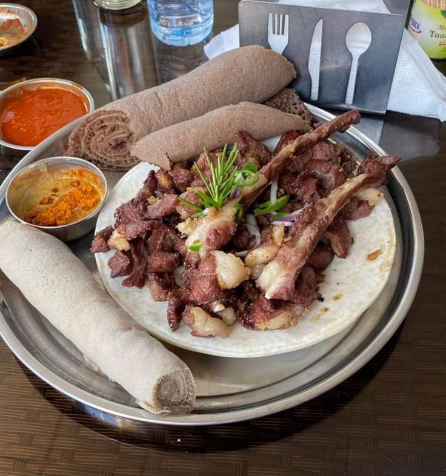

About Us
Welcome to Habesha Market, your one-stop shop for authentic Ethiopian and Eritrean products. We offer a wide range of traditional foods, spices, and cultural items.
Contact Us
Email: info@habeshamarket.com
Prices
| Food | Price |
|---|---|
| Doro Wat | ETB 250 |
| Tibs | ETB 150 |
| Kitfo | ETB 400 |
Image

Doro Wat is a traditional Ethiopian stew.

Tibs is a popular Ethiopian dish made with sautéed meat.
Kitfo is a traditional Ethiopian dish made from raw minced beef.